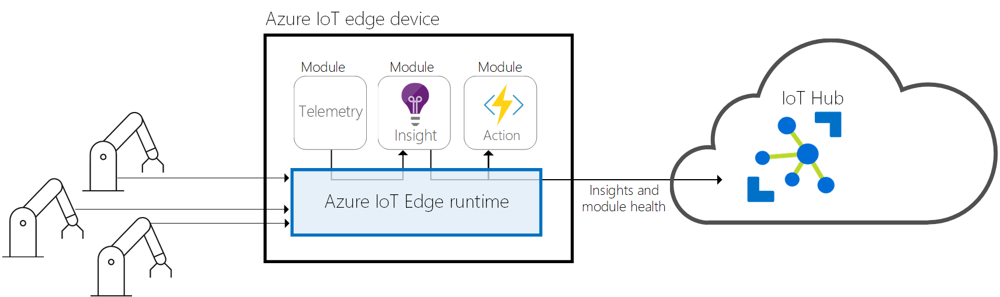

Az Azure IoT Edge
Az
Azure IoT Edge szolgáltatás a felhőbeli elemzéseket és egyéni üzleti logikákat eszközökre helyezi át, hogy a
szervezet az üzleti elemzésekre tudjon koncentrálni az adatkezelés helyett. Az üzleti logikát szabványos tárolóba
csomagolva kibővítheti IoT-megoldását, majd bármely eszközön üzembe helyezheti ezeket a tárolókat, és figyelheti az
összes felhőből.
Az elemzések jelentős üzleti értékeket teremthetnek az IoT-megoldásokban, de nem szükséges minden elemzést a
felhőben végezni. Ha a lehető leggyorsabban szeretne reagálni a vészhelyzetekre, a biztonsági rendellenesség
észlelése számítási feladatokat a peremhálózat szélén is futtathatja. Ha csökkenteni kívánja a sávszélességi
költségeket, és nem kívánja átvinni az terabájtos nyers adatokat, akkor az adatokat helyileg törölheti és
összesítheti, majd csak elemzés céljából elküldheti a felhőbe a bepillantást.
IoT Edge-futtatókörnyezet
Az
Azure IoT Edge-futtatókörnyezet egyéni és felhőbeli logikák is használatát is lehetővé teszi az IoT
Edge-eszközökön. A futtatókörnyezet a IoT Edge eszközön helyezkedik el, és felügyeleti és kommunikációs műveleteket
hajt végre. A futtatókörnyezet számos funkciót lát el:
A számítási feladatok telepítése és frissítése az eszközön.
Fenntartja Azure IoT Edge biztonsági szabványait az eszközön.
Biztosítja az IoT Edge-modulok folyamatos futását.
Jelenti a modulok állapotát a felhőnek a távoli monitorozáshoz.
Felügyeli az alárendelt levelek eszközei és egy IoT Edge eszköz közötti kommunikációt egy IoT Edge eszközön
lévő modulok, valamint egy IoT Edge eszköz és a felhő között.

IoT Edge-fu ttatókörnyezet
Verzióelőzmények
Ez a táblázat a IoT Edge csomagok kiadásának legújabb verzióit tartalmazza, és kiemeli az egyes verziókra vonatkozó
dokumentációs frissítéseket.
| Kibocsátási megjegyzések és eszközök |
Típus |
Dátum |
Legfontosabb tudnivalók |
| 1,2 – RC1 |
Előnézet |
2020. november |
Az átjárók mögött IoT Edge eszközök
IoT Edge MQTT-közvetítő
|
| 1.0.10 |
Stable |
2020. október |
UploadSupportBundle Direct metódus
Futásidejű mérőszámok feltöltése
Útvonal prioritása és élettartama
Modul indítási sorrendje
X. 509 manuális kiépítés
|
| 1.0.9 |
Stable |
2020. március |
X. 509 automatikus kiépítés a DPS-vel
RestartModule Direct metódus
támogatás – Bundle parancs
|
Forrás:
https://docs.microsoft.com/hu-hu/azure/iot-edge